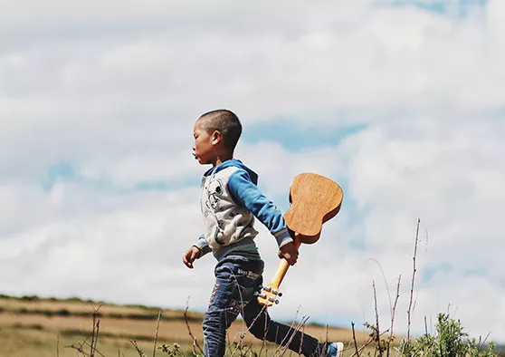
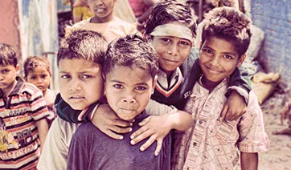
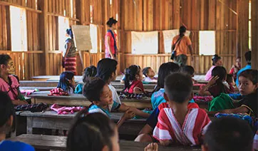
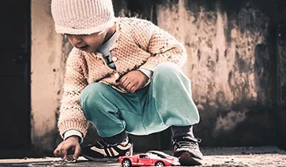

Volunteering for donation efforts is a powerful way to contribute to the well-being of others and make a positive impact in your community. Whether it's lending a hand at a local food bank, supporting blood donation drives, or assisting with fundraising for a charity organization, there are numerous opportunities to get involved. After identifying a cause that resonates with you.
In donation initiatives, integrating dance and music can infuse energy and creativity, enhancing engagement and encouraging generosity. Live performances, whether by local bands or dance troupes, bring vibrancy to events, enticing attendees to linger and potentially donate more. Theme-based events centered around dance or music, like salsa nights or karaoke fundraisers.
Online conferences in donation camps are instrumental in mobilizing resources and raising awareness for humanitarian causes. Their digital format ensures accessibility and flexibility, allowing individuals from diverse backgrounds to participate from anywhere. By leveraging.
A charity drive is an organized effort to collect donations or raise funds for a specific cause or organization. These drives can take various forms, including monetary donations, goods collection, and service-based contributions. Essential components of a successful charity drive include clearly defining the cause and beneficiary, setting measurable goals, and organizing a team of volunteers. Fundraising methods may range from events and online crowdfunding to corporate sponsorships. Effective promotion through social media, local media outlets, and community events is crucial to reach a broad audience. Logistics for collecting and distributing donations must be well-planned, ensuring that items reach the intended recipients.


Providing access to clean water for children is crucial for their health, development, and well-being. Safe drinking water helps prevent waterborne diseases, supports proper nutrition, and enables better hygiene practices. Ensuring that schools and communities have reliable water sources can improve educational outcomes.

Education for children is crucial as it lays the foundation for their overall development, shaping their intellectual, social, and emotional growth. It equips them with essential knowledge, critical thinking skills, and the ability to adapt to an ever-changing world. Through education, children learn to communicate effectively, solve problems.

Providing food for all involves a multifaceted approach that includes sustainable agricultural practices, equitable distribution systems, and innovative technologies to increase crop yields and reduce waste. It requires collaboration between governments, organizations, and local communities to ensure that resources are allocated efficiently .
Children helped
Water wells
Volunteers
A donation drive is a coordinated effort to collect goods or funds for a specific cause, often organized by charities, community groups, or institutions. These drives aim to gather donations such as money, clothing, food, toys.
A new cause to help
We love to help people
The new ideas for helping
Better Fascilities for all
79867-69023
tammanasethi1035@gmail.com
Gidderbaha